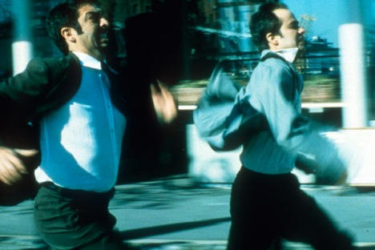
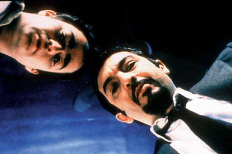
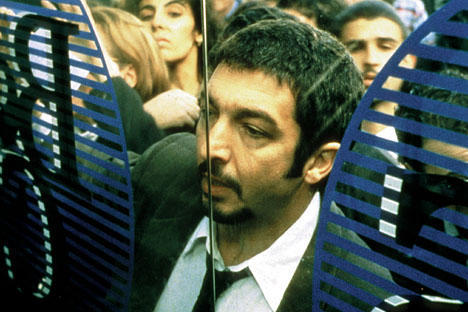

|
|
10. Juli 2006
Nueve Reinas (Arg 2001)
 Intelligente und spritzige Gaunerkomödie vor dem Hintergrund des argentinischen Zusammenbruchs. Ein Film voller Wendungen, bei dem man nie weiss, wer jetzt wen betrügt. «Nueve Reinas» reüssierte in Argentinien zu einem riesigen Kassenerfolg, gewann diverse nationale und internationale Auszeichnungen, und führte sogar zu einem USA Kinostart.
Der Betrüger Marcos (Ricardo Darín) beobachtet Juan (Gastón Pauls) bei einem missratenen Banknotentrick und bewahrt ihn vor dem Gefängnis, indem er sich als Polizist ausgibt. Da er gerade auf der Suche nach einem neuen Partner ist, bietet er Juan an, ihn unter seine Fittiche zu nehmen, denn zu zweit lassen sich weit lukrativere Betrügereien durchführen. Da Juan unbedingt Geld für seinen Vater auftreiben muss, willigt er ein und es beginnt ein kleiner Wettbewerb, in dem sich die beiden Angeber ihre «beruflichen» Fähigkeiten präsentieren. Doch plötzlich bietet sich ihnen der Coup des Lebens an: Der Verkauf eines gefälschten Briefmarkenblocks mit dem Namen: Die Neun Königinnen (Nueve Reinas).
 Ricardo Darín, in Argentinien der momentan beliebteste Darsteller und durch seine Rolle in «El hijo de la novia ? The Son of the Bride» auch international bekannt geworden, und Gastón Pauls geben ein typisches ungleiches Buddy-Paar ab. Marcos ist ein kaltblütiger Draufgänger mit Berufsstolz, der aber seine eigene Schwester verkaufen würde, Juan hingegen ist nicht ohne Skrupel, und seine Stärke ist sein unschuldiges Gesicht. Im Film ergänzen sich die beiden durch herausragende darstellerische Leistungen ausgezeichnet.
Der Film spielt in der Metropole Buenos Aires, wo die Krise bereits spürbar ist, wie es Marcos mit «dieser Ort fährt zur Hölle» treffend formuliert. Interessant ist dabei, dass der Film bereits 2001 abgedreht wurde und so den bitteren wirtschaftlichen Kollaps Argentiniens vorweg nahm.
 «Nueve Reinas» wurde mehrfach mit Filmen von Alfred Hitchcock und David Mamet verglichen. Und obwohl die Geschichte ebenso durchstrukturiert ist wie Mamets «Heist», wirkt sie doch viel glaubwürdiger und auch überraschender.
Bielinskys Debut ist von der ersten bis zur letzten Minute spannend, und dank der glaubwürdigen Darstellung der Charakteren und der stimmigen Dialoge beginnt man schon schnell, mit dem Buddy-Paar mitzufiebern. Doch die Lüge ist ihre Lebensart, und so weiss man nie, was als nächstes geschehen wird und wer hier eigentlich wen betrügt. Kritisieren kann man eigentlich nur, das der eine oder andere durch das eher abrupte Ende vielleicht nicht alles sofort durchschaut und eventuell leicht verwirrt das Kino verlässt.
Durch den überraschenden Erfolg aufmerksam geworden, hat sich übrigens Steven Soderbergh bereits die Remake-Rechte an «Nueve Reinas» sichern lassen. Dieses wird den Titel «Criminal» tragen, die Dreharbeiten sind bereits im Gang. Soderbergh fungiert allerdings nur als Produzent und Autor, die Regie überlässt er seinem langjährigen Weggefährten Gregory Jacobs. [ Text: Patrick Becker, cineman.ch ]
Festivals und Awards:
21 Festivalpreise & 7 Nominierungen
Arg 2001, B+R: Fabián Bielinsky, D: Gastón Pauls, Ricardo Darín. 114min, spa. meUT
19:30 Uhr, Space04 Kunsthaus Graz, € 5.-